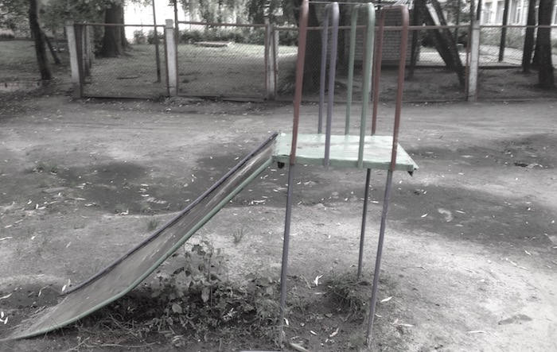

Homo sacer idéal: court historique de l'"évolution" du droit du handicap en France.
9 Avril 2019Dupin contre la France:le triomphe de la logique ségrégationniste
25 Avril 2019Sur la valeur et le coût d’une vie, sur le droit “spécifique”, l’invisibilité et l’ignorance.
17 Mai 2019Homo sacer idéal: court historique de l'"évolution" du droit du handicap en France.

On soulignera ici le fait que la justice et les autorités françaises
semblent largement ignorer dans les faits la Convention internationale sur les droits des personnes handicapées.
Mais aussi le paradoxe d’un déploiement important de moyens matériels, hélas pas dans le sens de l’inclusion effective,
bien au contraire. Le regard de l’ONU (rapport d’octobre 2017) sur la politique française envers le handicap est
particulièrement sévère, mais il offre les points d’appui nécessaires pour combattre l’injustice et les maltraitances qui
en découlent. Il souligne crûment que la majorité des autorités publiques et prestataires rencontrées lors de la visite de
la rapporteuse ne sont pas informées des dispositions de la CDPH, et que la voix des personnes handicapées est insuffisamment
prise en compte.
Le rapport de l’ONU pointe de plus que la loi sur l'égalité des chances de 2005 donne une définition du handicap ne
correspondant pas à la Convention. Ou encore que les données sociodémographiques manquent. De plus, l’accent est, en
France, mis sur la déficience de l'individu et non pas sur les manques relatifs aux services apportés, ce qui contribue
à l'isolement des personnes ainsi qu'au retard des politiques publiques. Il souligne la nécessité d’une politique du
handicap fondée sur les droits.
Décalage français
Catalina Devandas Aguilar, la rapporteuse spéciale de l'ONU, (dont nous reproduisons en fin d’article des extraits de ses
observations) constate que le code electoral, le code civile et la loi sur la santé mentale ne sont pas conformes à l’article
12 de la Convention relative aux Droits des Personnes Handicapées (CDPH): L’harmonisation juridique avec la Convention reste à opérer. Les retouches récentes apparaissent comme cosmétiques : l’exemple des droits de vote et de mariage autorisés
sans contrainte pour les personnes protégées mais sans tenir compte de leur éventuel confinement en institution,
suffit à faire comprendre la superficialité et l'inutilité du changement.
Le chemin à parcourir est encore long...
1/ Loi du 11 février 2005
Article 114 "Constitue un handicap, au sens de la présente loi, toute limitation d'activité ou restriction de
participation à la vie en société subie dans son environnement par une personne en raison d'une altération
substantielle, durable ou définitive d'une ou plusieurs fonctions physiques, sensorielles, mentales, cognitives
ou psychiques, d'un polyhandicap ou d'un trouble de santé invalidant."
Cette définition dit: le handicap réside non pas dans l’altération d’une fonction, mais dans la limitation subie de
la participation à la vie en société. Alors on prend acte de cette limitation, ou bien on cherche à en atténuer la
portée? Le choix politique est dans cette alternative. En France il semble qu’on prend acte avec fatalisme, en
cherchant à dispatcher les uns et les autre dans de lieux « appropriés », comme on va le constater à la lecture
ci-dessous, et comme les données officielles (DREES) le démontrent à l’envie.
2019 ce qui change :
Quatre droits sont acquis à vie, à partir du 1/01/19: l'AAH (allocation adulte handicapé), la RTQH (reconnaissance
qualité travailleur handicapé), la carte mobilité (transports stationnement etc), l’AEEH (allocation éducation enfant
handicapé). L’AAH passe à 860 € par mois (+ 5 %). Le droit de vote et le droit de se marier sans en passer par un juge
sont affirmés pour les personnes protégées. Cette mise en conformité reste formelle pour toutes les personnes mises
sous tutelles et confinées en institution, puis qu’elles ne peuvent, de fait, pas disposer d’elles-mêmes.
2/ Loi du 5 mars 2017, personnes protégées.
D'après les données du Ministère de la Justice, citées dans le rapport de l’ONU, il y aurait quelques 385 000 personnes
handicapées mises sous tutelle et 350 000 sous curatelle. Les personnes autistes et celles avec handicap intellectuel sont
placées d'office sous tutelle ou curatelle. La mise sous tutelle entraîne un risque presque systématique
d'institutionnalisation, ainsi qu'une privation de droits de fait.
La loi du 5 mars 2007 vise à renforcer dans le Code civil l’autonomie de
la personne protégée, en affirmant le principe de l’information par le tuteur ou le curateur du majeur protégé sur sa
situation personnelle et la gestion de ses biens, la recherche de son consentement ou de son adhésion. Elle rappelle
le principe de conservation de son lieu de vie et de ses objets personnels ainsi que le principe de liberté du choix
de sa résidence et de ses relations avec les tiers.
Mais rappeler des principes est une chose, préciser des obligations en est une autre. Rappeler l’autonomie de la personne
protégée, et non ses droits fondamentaux, apparaît parfaitement ironique, puisque la personne est protégée en raison de son
manque suppose d’autonomie. Et l’on sait bien, particulièrement en France, que des principes à la réalité, il y a
parfois un fossé : celui de l’inertie et des mentalités conservatrices.
La loi du 5 mars 2007, concernant la protection juridique des majeurs, rappelle, entre autres, au chapitre 7, les dispositions
suivantes du Code civil :
Art. 432: " Le juge statue, la personne entendue ou appelée. L'intéressé peut être accompagné par un avocat ou,
sous réserve de l'accord du juge, par toute autre personne de son choix. Le juge peut toutefois, par décision
spécialement motivée et sur avis du médecin mentionné à l'article 431, décider qu'il n'y a pas lieu de procéder à
l'audition de l'intéressé si celle-ci est de nature à porter atteinte à sa santé ou s'il est hors d'état d'exprimer
sa volonté."
Cet article s’avère en contradiction avec les dispositions de la CIDPH car plus restrictif. La capacité juridique supposerait
que « l’intéressé(e) » doive être assistée d’un avocat et pas seulement « puisse » l’être. De plus, la Convention stipule
expressément qu’on ne peut se dispenser d’auditionner la personne concernée quel que soit son handicap, et avec
des moyens justement appropriés : visiblement le législateur a omis d’ajuster le droit lors de la ratification
survenue en 2010.
Art. 459-2. - La personne protégée choisit le lieu de sa résidence.
Elle entretient librement des relations personnelles avec tout tiers, parent ou non. Elle a le droit d'être visitée et,
le cas échéant, hébergée par ceux-ci. En cas de difficulté, le juge ou le conseil de famille s'il a été constitué
statue.
Dans la dernière remarque, que signifie « en cas de difficulté »? La formule peut être interprétée de façon
discrétionnaire. Et c'est très souvent le cas : dans notre propre expérience, c'est même le cœur du problème.
Ici encore, on n’évoque pas l’obligation d’entendre la personne protégée elle-même. Elle n’est plus sujet de droit.
Art. 475. - La personne sous tutelle est représentée en justice par le tuteur.
Le principe de représentation en justice par le tuteur apparaît contradictoire avec la CDPH. La personne protégée
doit bénéficier de son propre avocat. Même remarque que pour les points précédents.
3/ Conséquences de la protection : placements et soins psychiatriques, loi du 5/07/2011
Le système français de protection sociale est décrit dans le rapport de l’ONU comme ayant une approche paternaliste
d'isolement plutôt que favorisant des mesures d'accès à la citoyenneté et la participation à la collectivité. Il privilégie
le placement en institution plutôt que la vie en société. La demande de placement en établissement est massive, faute de
facilités alternatives favorisées. Environ 10 000 enfants et 200 000 adultes résident dans des institutions de toutes sortes.
On se reportera aux données de la DREES pour les précisions, les dernières publiées datant de 2014. Ces dernières ne
comptabilisent pas les hospitalisations mais seulement établissements et services spécialisés.
Le Code de Santé Publique, modifié par la loi no 2011-803 du 5 juillet 2011, régit les conditions et procédures relatives
aux soins psychiatriques sans consentement, à la demande d’un tiers ou d’un représentant de l'État. Or, les personnes avec
handicap psychosocial demeurent en hôpital psychiatrique durant de longues périodes, n'étant pas nécessairement informées
de leurs droits à rencontrer le juge des libertés et détention. En conséquence, il est très difficile de s’opposer à ces
hospitalisations, les juges se fiant principalement à l'avis des médecins. Ici encore, l’expertise médicale, dans bien des
cas très formelle (parce que résultant d’une consultation ponctuelle), s’avère prendre force de loi, au détriment de toute
autre forme d’information sur la situatio, et donc de consultation appropriée de la personne.
Conclusion
On aura remarqué l’absence de franchise politique des pouvoirs publics français sur la question du sort des
handicapés, en particulier devenus majeurs. La comparaison entre les formulations rhétoriques du droit français
(par exemple l’expression « en cas de difficulté » dans l’article 459-2 sur la liberté de résidence de la personne
protégée: cette mention ouvre la porte à toute restriction arbitraire de cette liberté) et celles beaucoup plus
limpides de la CDPH est édifiante. Comme si le droit français fournissait systématiquement lui-même le moyen de
l’affadir ou le détourner. Compte tenu de l’ampleur évaluée de la population concernée, mais aussi des pratiques
aussi bien administratives que judiciaires, ou encore des professionnels impliqués, l’absence de données précises
(et surtout les données qui évitent des questions essentielles, telles que le taux de satisfaction des situations
des personnes protégées, et celui de leur entourage) ne peut être perçue autrement que comme une volonté politique
implicite de laisser les problèmes et manquements au droit sous le tapis.
haut de page
Dupin contre la France: le triomphe de la logique ségrégationniste

dessin de DP
Un cas "parmi les autres"?
La décision dans l’affaire Dupin contre la France1 concerne une question qui est portée régulièrement devant la Cour
Européenne (et pas uniquement contre la France): est-ce que l’éducation inclusive est un droit inconditionnel ou est-il
soumis à des conditions? Notons de suite que la CEDH penche pour la deuxième réponse et cela, a contrario des cas jugés
précédemment (Çam, contre Turquie, Enver Sahin contre Turquie 2).
Le cas français est different en ce qu’il concerne un enfant atteint d’autisme avec un retard développemental important,
alors que le cas exemplaire de Çam concerne un handicap sensoriel. A contrario de ce qu’on peut supposer, les litiges
concernant le handicap dit mental (intellectuel) commencent seulement maintenant à arriver devant la CEDH: vu les délais
des justices internes (en tous cas en France) on peut en conclure que la conscience et l’exigence de l’inclusion nées dans
le sillon de la Loi 2005 arrive seulement maintenant à franchir l’étape de l’instance européenne. Des décisions sur les
cas portés par d’autres pays (la Roumanie est citée fréquemment) sont attendues prochainement.
Il est à noter que, contrairement à des réclamations émanant de personnes ou de proches de personnes handicapées jugées
habituellement par une Chambre, le cas Dupin a été jugé par le Comité des trois juges (qui ne statue que sur les
réclamations moins complexes) alors que le cas était suffisamment nouveau et la jurisprudence attendue très importante
pour la suite.
Dans le cas Dupin, il s’agit d’un enfant au moment des faits (le garçon nommé E. dans le texte) qui est placé en IME
en 2013. Il résidait déjà avec son père qui voulait ce placement (et pas avec
la mère qui n’en voulait pas et qui est à l’origine de la démarche judiciaire réclamant la scolarisation en milieu ordianire).
La situation est classique en France, car ayant attiré le questionnement de l’ONU à ce sujet lors de l’audition de la France par le Comité des doits
d'enfant: la justice donne l’enfant au parent qui est d’accord avec l’institutionnalisation. Certes, les cas avec désaccord
parental sont des plus compliqués, mais ce qui est frappant, c’est que non seulement les instances judiciaires
françaises, mais aussi la CEDH, dans ce cas précis, évoquent la volonté du père d’institutionnaliser l’enfant comme un
argument supplémentaire . Le droit propre de la personne handicapée devient sujet de caution des accords et
désaccords parentaux.
"L'oubli" de la Convention.
La requerente a évoqué l'article 24 de la Convention Internationale des Droits des Personnes Handicapées (CIDPH) devant la
Cour de la Cassation mais étrangement, cette Convention est absente des debats et attendues de la CEDH. Cela peut paraitre
invraisemblable de la part d’une instance internationale dont on attendrait qu’elle hisse les accords internationaux au
premier rang juridique. Mais c’est un fait, et de surcroît même pas isolé pour les décisions récentes de la CEDH : un autre
cas - cette fois d’un homme âgé sous le régime de la curatelle renforcée à qui on a dénié, en Octobre 2018 (post-mortem, car
l’homme est décédé avant le traitement de son cas par la Cour) le droit de se marier en ignorant l”article 12 de la CIDPH
sur la capacité juridique, tout en avançant une interprétation très à la française de l’article 12 mais cette fois de la
Convention Européenne des Droits Humains (CEDH): une tranchante analyse de ce cas est donnée dans le
Strasbourg Observers blog.3
La deuxième tendance que l’on ne peut voir autrement que comme un signe de retour en arrière de cette instance
européenne, est sa fidélité au raisonnement des instances françaises alors qu’on serait en droit d’attendre une
posture critique (sinon, demanderons-nous, “à quoi ça sert?”). En effet, à aucun moment les affirmations ségrégatives
des autorités françaises ne semblent choquer les trois juges Européens :
“la Maison départementale des personnes handicapées d’Ille-et-Vilaine, maintint sa position, faisant valoir qu’une
orientation en CLIS TED (trouble envahissant du développement) « qui est judicieuse pour les enfants entrant ou
progressant dans le rapport aux autres ne conviendrait pas à E.”
“Cette expérience a révélé, comme l’a indiqué la CNITAAT, qu’il avait peu de contacts avec les élèves, ne parlait pas,
n’écrivait pas, ne lisait pas, ce qui laisse entendre, d’après cette juridiction, qu’il n’était pas capable d’assumer
les contraintes et les exigences minimales de comportement qu’implique la vie dans une école normale.”
“Elles (autorités françaises) ont opté pour une éducation appropriée à ses besoins, en milieu spécialisé, une
orientation dont il convient de noter qu’elle satisfait son père qui en a la garde”.
Nous sommes devant une affirmation nette et appuyée d’un modèle d’intégration - et non pas d’inclusion - qui
règne en France et est appliqué autant qu’il se peut par l’Education Nationale. Ce n’est pas à l’école de s’adapter à
l’enfant, comme on a pu le croire en lisant le nouveau cadre de l’Ecole pour tous adopté en grande pompe sous la présidence
de F. Hollande, mais bel et bien l’élève qui doit “atteindre le niveau” et “répondre à certaines exigences” pour avoir le
droit de côtoyer les pairs ordinaires - même de loin puisque scolarisé en ULIS.
Adieu language (qui a du sens).
L’autre problème, corrélatif, c’est la reprise du langage vide de sens des attendus français par le Comité du Strasbourg:
“il ressort du dossier à sa disposition que cette prise en charge scolaire, certes sur des temps partiels,
convient à son (celui de l’enfant) épanouissement (paragraphe 15 ci‑dessus).”
On ne sait pas (et le saura-t-on jamais?) ce qui est véritablement derrière l’affirmation de “l’épanouissement” de cet
enfant. Le contrôle réel des services médicaux-sociaux n’existe pas en France. Les mots sont manipulés librement dans
une euphorie qui est d’autant plus incontrôlable que incontrôlée. De temps à l’autre, par grand hasard, on arrive à
entrevoir une lueur de vérité (comme la maltraitance dans une institution) : le prix payé par les personnes ayant osé
la révéler est très prohibitif et participe, il faut le croire, à une adhésion encore plus fidèle de ceux qui “restent
à bord” à la manipulation dominante du langage.
Ce remplacement du sens et cet enfermement dans des formules aussi ouvertement inadéquates (un enfant s’épanouissant
en institution en compagnie - uniquement - des trois autres qui ont tous le même handicap que lui) - cela ne nous
rappelle-t-il pas quelque chose? Si la communication aujourd’hui tourne, à tous les niveaux, en circuit fermé et
totalement détaché de la réalité, le langage utilisé dans la communication officielle et juridique du handicap brille
par son caractère artificiel et cache-misère. Cela peut constituer un obstacle à la juste appréhension de l’affaire
par la CEDH : il est d’autant plus urgent, pour nous, ainsi que pour la justice, de trouver des repères dans le flot
de communication fortement polluée par conflits d’intérêt et mentalité ségrégationniste persistant en France malgré
toutes les bonnes paroles.
C'est exactement ce qu'on constate dans un article écrit par Roseline Letteron, professeure de droit public à
l'Université Paris-Sorbonne.4 En donnant entièrement raison à la CEDH dans la décision dans le cas Dupin contre la
France, Mme Letteron fait preuve d'une ignorance totale, non pas seulement de la CIDPH, mais également de la Loi du
11 février 2005. Il est stupéfiant de lire l'affirmation de l'auteure selon laquelle le droit à l'instruction ne
serait aucunement garanti en France : « l'article L 112-2 du code de l'éducation se borne à garantir à chaque personne
handicapée un "droit à l'évaluation de ses compétences, de ses besoins et des mesures mises en oeuvre" dans le cadre d'un
parcours de formation qui doit être défini en fonction de sa situation personnelle. »
Le raisonnement se poursuit, qui placerait cet article comme alternative au droit à l'éducation garanti dans la Constitution
et par l'article 2 du Protocole n°1 de la Convention européenne des droits de l'homme. De même, Mme Letteron n'a pas pris le
soin d'étendre sa lecture de l'article 24 de la CIDPH jusqu'au paragraphe 2, car elle affirme, en dépit de ce que
dit ce paragraphe, qu'« il ne s'agit pas nécessairement d'un droit à l'instruction en milieu scolaire ordinaire »
alors que ledit article stipule que « les États Parties veillent à ce que : a) Les personnes handicapées ne soient pas
exclues, sur le fondement de leur handicap, du système d’enseignement général (...) ».
On reste songeur devant une telle ignorance du droit international et national par une enseignante du droit à la
Sorbonne, mais on commence à comprendre mieux les sources de l'ignorance et négation des droits des personnes
handicapées en France. La logique ségrégationiste est admise comme base, et tout ce qui n'y correspond pas est ignoré,
au mépris de la loi et des convention internationales qui s'imposent sur la loi nationale en vertu de l'article 55 de
la Constitution française.
Provoquer le changement.
Il faut le répéter, la Convention Internationale des Droits des Personnes Handicapées existe, elle est
opérationnelle en France depuis 2010, année de sa ratification, et elle prime sur la loi nationale. Certes, il s’agit
souvent d’une aspiration et d’une affirmation de valeurs, plus que du cadre strictement juridique, mais ces valeurs
et cette aspiration sont bien précises et doivent devenir la référence pour la jurisprudence. Le Convention existe
précisément pour provoquer le changement. Or, ce n’est pas le cas en France, où la Convention est largement ignorée.
Et le silence de la presse généraliste française sur ce constat fait par la Rapporteuse Spéciale de l’ONU est tout
simplement assourdissant.
Mais encore plus assourdissante est une sentence de l’instance européenne de laquelle on aurait attendu un respect de
la CIDPH.
Derrière le cas Dupin, on devine (encore) un destin sacrifié. La France et ses institutions semblent être incapables
de prendre la mesure de ces drames humains, de se détacher du modèle ségrégationniste qui revient par la fenêtre si
on le chasse (très timidement) par la porte.
Actuellement, la seule chance d’enrayer la régression du modèle social de l’inclusion est la Convention. Nous devons
la promouvoir et nous battre pour son respect. Ne laisser passer aucun “oubli” ni relativisation du type “c’est de
l’utopie”. La vie parmi ses semblables, et non dans un lieu fermé, avec les sorties hebdomadaires dans un parc public
n’est pas de l’utopie. C’est un droit.
haut de page
1. source: https://hudoc.echr.coe.int/eng#{%22itemid%22:[%22001-189671%22]}
2. source: https://hudoc.echr.coe.int/eng#{%22fulltext%22:[%22%C3%A7am%20v%20turkey%22],%22documentcollectionid2%22:[%22GRANDCHAMBER%22,%22CHAMBER%22],%22itemid%22:[%22001-161149%22]}
3. source: https://strasbourgobservers.com/2018/12/03/loneliness-that-is-good-for-you-the-european-court-addresses-the-right-to-marry-of-people-with-disabilities/
4. source: https://libertescheries.blogspot.com/search?q=dupin&fbclid=IwAR0NIEIYeNJv2JxL2QfJpshoTL93LNUG6u1sQv4Bh7LT7SZUoCt2fpzg698
Sur la valeur et le coût d’une vie, sur le droit “spécifique”, l’invisibilité et l’ignorance

L’invisibilité
Peu connaissent aujourd’hui l’existence des «ugly laws» (les lois laides ou lois sur les laids :
les deux intreprétations sont justes) introduites dans la plupart des états des Etats-Unis à partir
des années 1860, et qui interdisaient aux personnes «laides et inconvenantes» d’apparaître en public… S’en suivait la
stérilisation forcée des handicapés, mentaux et physiques, et pas uniquement aux USA. La dernière de ces lois n’a été
révoquée qu’en 1974.
Rendre des individus invisibles, inconnus, est un préalable et une condition à l’acceptation de leur destruction.
C’était le principe même des ghettos: il faut (re)écouter les témoignages des survivants du ghetto de Varsovie
sur leurs sorties incognito dans une ville qui, même sous occupation allemande, ignorait ce qui se passait de l’autre
côté des murs du quartier «spécial».
D’une manière générale, une spécificité de situation donne lieu à la création d’un «droit spécifique». Cependant, ce
droit spécifique, dans l’interprétation des magistrats français, est soumis à condition. Ainsi, pour que sa volonté
soit considérée, il est attendu d’une personne handicapée autiste se trouvant sous tutelle qu’elle soit en capacité
d’exprimer un avis «libre, raisonné et pertinent». Le droit de toute personne handicapée mentale ou physique à pouvoir
disposer de sa liberté, fixé dans la loi expressément consacrée aux personnes handicapées, reste suspendu de facto à
cette règle d’exception qui l’enferme dans un cercle sans issue : tu as des droits en tant qu’handicapé mais tu ne
peux pas en jouir, parce que tu es un handicapé.
La règle de l’«inclusion par exclusion» dont parle Giorgio Agamben apparaît ici comme la désignation de cette zone du
droit spécifique dans laquelle, en fait, le droit…ne s’applique pas. L’exception n’est pas une règle, et dans la zone
«exceptionnelle» (de la mise à l’écart), l’application même de ce droit spécifique n’est plus une règle. Telle est la
cruelle «dialectique» du droit du handicap en France.
Une fois dans la zone de non-droit où aucune règle n’est claire ni même visible, tout devient sujet d’arbitrage libre :
en fait, tout devient arbitraire. Ainsi sont décidés, «par défaut», le placement de la personne sous médication lourde,
dans une institution fermée, ou même l’arrêt de l’alimentation dans le but de la mort. Nous sommes témoins de la tentative
de la ministre de la santé du gouvernement français, Agnès Buzin, de déplacer l’affaire très médiatisée de Vincent Lambert
hors de tout champ, même de celui du handicap (déjà fortement ghettoïsé). Son affirmation que cet homme, tétraplégique depuis
11 ans après un accident, «n’est pas un handicapé» trahit l’effort de glissement constant d’une «zone spéciale» vers l’autre,
dans le but d’échapper à tout engagement international pris, lui, comme tous les engagements, dans un élan communicationnel
exclusivement.
La vie “indigne”
Etant abonné au journal Le Monde version online, j’ai le loisir de lire les réactions des personnes aux publications
«en continu». Une des premières réactions sur l’article annonçant l’augmentation de l’allocation de l’adulte handicapé
était la question des sous.
De même, le bon tiers des réactions sur les articles autour de la vie et la mort programmée de Vincent Lambert,
concernent le coût du maintien de cet homme en vie alors que il ne l'est que "d'apparence".
On voit donc s’opérer dans les mentalités, à l’unisson de la jurisprudence, la distinction entre qui est sujet de
droit et qui ne l’est pas (ou plus). A celui dont la vie n'en est pas réellement une (prise entre guillemets)
on peut
la prendre sans qu'il - ou ses proches - puissent s'y opposer. Illustration parfaite de Home sacer.
Aujourd’hui, l’argument
retenu par la justice à tous les échelons (jusqu’à la CEDH) est la situation médicale irréversible du patient et non
pas la fin de vie (qui corresponderait à la Loi Leonetti) car Vincent Lambert n'est pas mourant: son état est stable
depuis plusieurs années.
L’argument
tournant en boucle dans la presse est «l’indignité de la vie» de cet homme (qui ne le serait «qu’en apparence»).
Il est stupéfiant qu’on oublie, dans ces débats, des précédents historiques pourtant pas si lointains.
Ignorants ou pas, nos concitoyens suivent à la lettre le raisonnement d’un certain Adolf Jost, étudiant allemand en
philosophie qui publiait, en 1895, une réflexion sur « Le droit à la mort » (« Das Recht auf den Tod »).1 Parlant des
«paralytiques» et des «fous furieux», il s’exclamait: «ces gens n’ont-ils pas droit à la mort, la société humaine
n’a-t-elle pas le devoir de leur accorder cette mort avec le moins de souffrance possible ?»
Après la Première guerre mondiale, et dans le contexte des privations éprouvées par la majorité de la société, le
problème de l’euthanasie a été soulevé avec un nouvel accent, celui de la valeur : Karl Binding, spécialiste de droit
pénal, et Alfred Hoche, psychiatre, publient, en 1920 un texte, « L’autorisation de détruire la vie indigne d’être
vécue. », dans lequel il posent cette question: « Existe-t-il des vies humaines qui ont si manifestement perdu les
qualités de ce que le droit est tenu de protéger, que leur poursuite est durablement privée de toute valeur pour leur
possesseur comme pour la société ? » Il est intéressant que, à côté des personnes qui voudraient elles-mêmes en finir
avec une souffrance intenable, on cite, comme cible, les «morts cérébraux», incapables d’exprimer leur volonté et
dont «l’élimination» «ne représente ni un crime, ni une action immorale, ni une atrocité affective mais un acte utile
et légitime. » Cette publication souleva l’indignation des milieux juridiques, politiques et médicaux de la République
de Weimar; mais quand, en 1923, le docteur Edward Melzer fit une enquête auprès des parents des enfants handicapés
qui se trouvaient dans l’établissement où il pratiquait, leur demandant s’ils souhaiteraient mettre un terme, de
manière indolore, à la vie de leur enfant diagnostiqué comme retardé incurable, 73% d’entre eux ont répondu qu’ils
acceptraient que leur enfant soient tué, mais à la condition de ne pas être mis au courant d’une telle démarche.
L’invisibilité comme refus de savoir, une ignorance délibérée qui autorise : n’est-ce pas la même invisibilité organisée
aujourd’hui dans notre société qui veut ignorer - et qu’on aide activement à ignorer - le sort et les conditions de vie des
personnes handicapées mentales?
Dans l’Allemagne nazie, où l’institutionnalisation des personnes handicapées était systématique, l’argument de la
valeur d’une vie interférait naturellement avec celui de son coût pour la société. La première «mort miséricordieuse»
demandée par des parents pour leur enfant né handicapé et malformé a été autorisé par Hitler en août 1939, et en un a
n le processus ainsi enclenché emporta plusieurs milliers des vies. Il fut stoppé temporairement par des protestations
des parents, mais reprit sans gêne avec l’entrée en guerre avec l’URSS, quand l’argumentaire des dépenses militaires
s’imposa par dessus toute autre considération. Banalité de ces pratiques sous le Troisième Reich : dans les manuels
scolaires de maths figuraient des problèmes à résoudre sur le coût d’entretien d’un handicapé durant sa vie entière.
Comparaison stérile ou déplacée? Pourtant, la rhétorique des débats sur un cas très médiatisé et la rhétorique muette
de l’institutionnalisation persistante et féroce des handicapés mentaux en France,
ignorant toutes les Conventions et rappels à l’ordre, nous rapprochent dangereusement
de ces exemples dont on croit être vaccinés à jamais...
Et après?
Une barrière très fragile sépare encore les Français d’une décision cynique (ou «pragmatique», c’est selon) de
commencer à euthanasier les personnes dont "la vie" prise entre guillemets n'a pas de valeur - mais seulement un coût
pour la société.
La crise écologique globale qui va réduire encore l’espace vital peut bousculer la situation de manière imprévisible
et rapide et il est certain que les citoyens les plus vulnérables et les moins visibles risquent de disparaître
définitivement et parmi les premiers : comme cela a été le cas pendant tous les grands bouleversements du siècle
dernier. Ajoutons à cela le renversement de la pyramide des âges qui change de manière dramatique le ratio entre
valides et non-valides, dont les premiers devront s’occuper des seconds. Sera-t-il possible de s’adapter à cette
nouvelle donne (tout en s’adaptant au changement climatique et ce qu’il entraîne) sans un clash social majeur qui
pousserait les plus forts à chercher à se débarrasser des plus faibles? Ce risque existe et augmente d’autant plus
dans une société qui classe ses sujets sur l’indice de la valeur et du coût de leur vie, et qui relègue ses sujets
moins «valables» dans des zones d’invisibilité.
Un changement de paradigme s’impose et il s’impose à tous : chacun peut, à un moment donné, devenir le dernier,
le plus faible ou le plus «ugly», le premier sur la liste du lest à lâcher.
haut de page
1. Ici, comme dans les passages qui suivent, je m'appui sur le texte de Geritt Hohendorf, L’extermination de malades et handicapés mentaux sous le régime national-socialiste publié sur le site Sciences Po; https://www.sciencespo.fr/mass-violence-war-massacre-resistance/fr/document/l-extermination-de-malades-et-handicapes-mentaux-sous-le-regime-national-socialiste